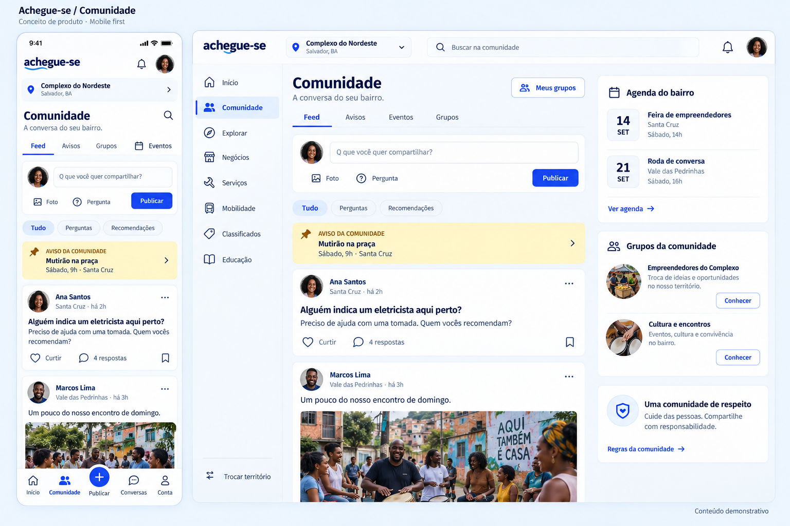

Feed, filtros, grupos e agenda. Referência visual inicial, deve ser conciliada com publicação consolidada e política de vínculos; não autoriza escrita irrestrita.
Documento da página · Registro da revisão
